Corriger emails, téléphones, domaines et sources.
01 · Vision
01. Je passe d'une base enrichie à une base exploitable
Je ne veux pas envoyer des messages tout de suite. Je veux une base propre, dédupliquée, scorée et prête pour la séance de prospection.
02 · Objectif
02. La séance 18 est un sas qualité
Les données collectées avant sont utiles, mais elles doivent devenir actionnables.
Créer une priorité finale sur 100.
Préparer le bon message pour le bon type de restaurant.
03 · Avant / après
03. Une base riche peut rester inutilisable
Si je ne trie pas, j'envoie aux mauvais leads ou je mélange les canaux.
Avant
11 839 lignes enrichies, plusieurs onglets, doublons, contacts incomplets.
Après
CRM propre avec statuts qualité, classes finales et file d'attente d'outreach.
04 · Champs
04. Les champs doivent servir l'outreach
Un email, un téléphone ou un domaine ne vaut rien s'il n'est pas propre, sourcé et relié à une action.
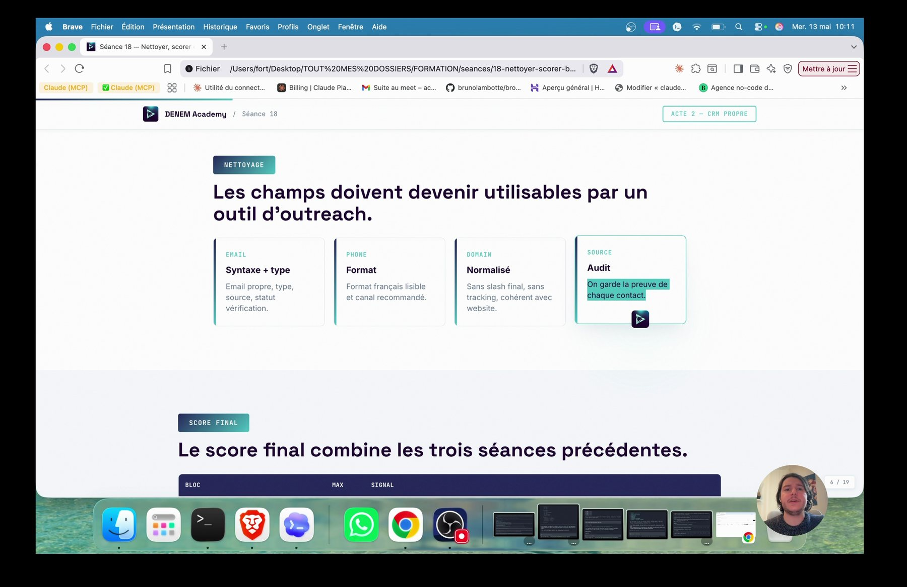
05 · Pipeline
05. Le pipeline de la séance
Je transforme la base Apify en CRM final.
Apifynormalisationdéduplicationqualitéscore finalsegmentsCRM
06 · Règle
06. Aucun envoi dans cette séance
La base est préparée pour envoyer plus tard, pas pour contacter maintenant.
07 · Statuts
07. Le CRM doit dire quoi faire
Chaque ligne doit sortir avec un statut compréhensible.
| Statut | Signification | Action |
|---|---|---|
| CLEAN_READY | Contact exploitable et données cohérentes | Peut rejoindre la file d'outreach |
| READY_WITH_WARNING | Exploitable avec une réserve | Contacter doucement ou vérifier |
| NEEDS_MANUAL_REVIEW | Ambiguïté réelle | Relecture humaine |
| DO_NOT_CONTACT | Risque ou mauvais fit | Exclure |
| ENRICH_LATER | Données insuffisantes | Reprendre plus tard |
08 · Segments
08. La prospection a besoin de segments
Je ne veux pas une seule liste. Une brasserie, un traiteur et un restaurant gastronomique ne reçoivent pas le même message.
09 · Classes
09. Les classes finales imposent une priorité
Le score final devient une décision simple.
Meilleurs leads, contact complet, angle clair.
Prêts email ou appel.
Exploitables, mais moins prioritaires.
À enrichir ou vérifier.
Ne pas contacter.
10 · Principe
10. Je cherche la qualité avant le volume
La base propre réduit le coût de la prochaine séance.
Un mauvais fichier rend une bonne automatisation dangereuse.
11 · Codex
11. Je lance Codex dans le projet
Je sélectionne le dossier où la collecte massive a été réalisée, puis je colle le prompt CRM.
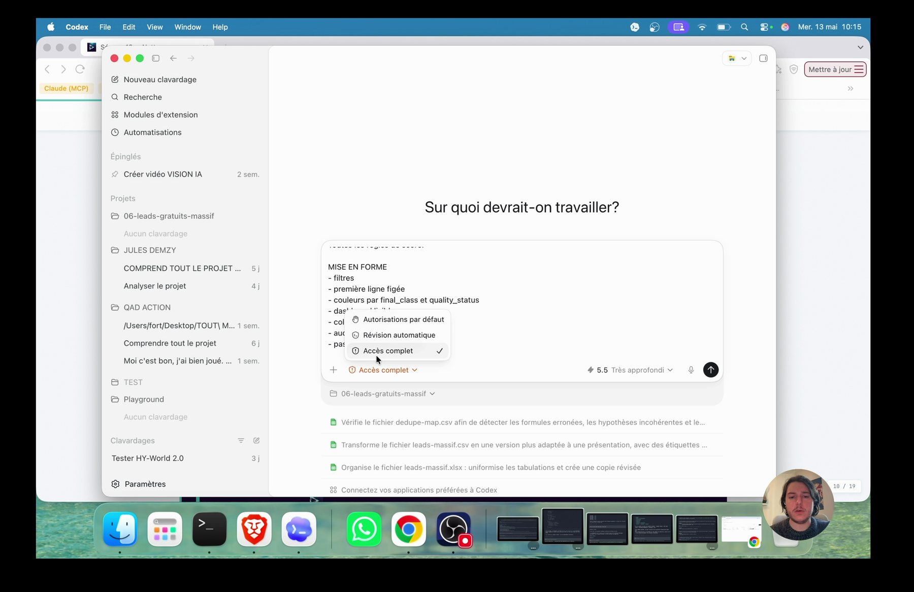
12 · Avant prompt
12. Je vérifie le contexte avant d'envoyer
Le modèle doit lire le bon fichier source.
- 01
Le dossier projet est bien sélectionné.
- 02
Le fichier Apify existe ou peut être retrouvé.
- 03
Je donne l'accès complet si je veux une exécution autonome.
- 04
Je garde les anciens fichiers intacts.
13 · Prompt contrôle chemin
13. Si le chemin ne répond pas, je fais chercher le vrai fichier
Ce prompt sert à éviter de générer une base depuis le mauvais export.
Prompt à copier
Vérifie que tu travailles dans le bon dossier.
Le fichier source attendu est :
~/Desktop/mon-business/08-enrichissement-apify/leads-apify-enriched.xlsx
Si le chemin ne répond pas tel quel, cherche le fichier dans le dossier projet réel.
Ne modifie pas les anciens fichiers.
Dis-moi quel fichier exact tu vas utiliser.14 · Bon fichier
14. Codex retrouve le fichier réel
Le chemin annoncé ne répond pas toujours tel quel. Je laisse Codex inspecter le dossier partagé et retrouver la bonne variante.
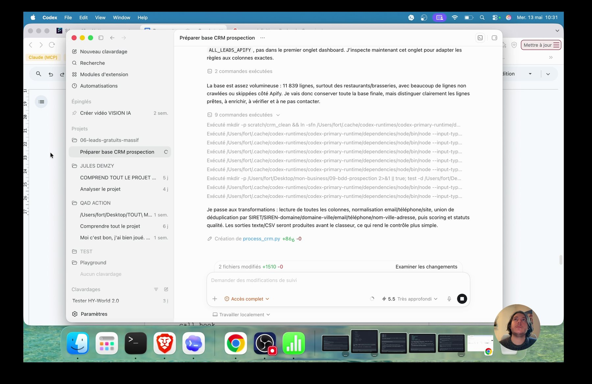
15 · Volume
15. La base contient 11 839 lignes
Je confirme le volume avant de traiter. C'est important pour comprendre le temps de calcul et les futures statistiques.
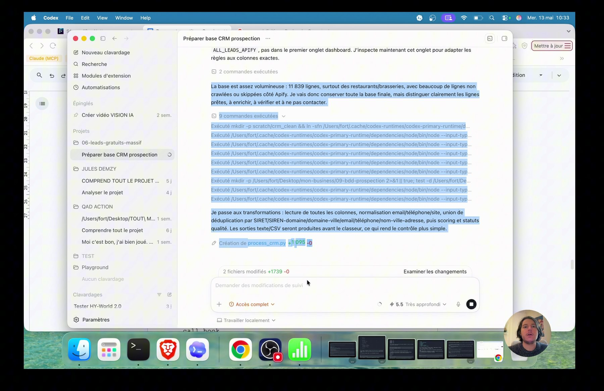
16 · Prompt CRM
16. Le prompt maître CRM
Ce prompt crée la base CRM propre, les scores, les statuts, les onglets, les rapports et les contrôles.
Prompt à copier
Tu es un RevOps data engineer senior, spécialiste nettoyage de bases B2B, scoring commercial, CRM, conformité et préparation de campagnes de prospection.
MISSION
Tu dois reprendre le fichier enrichi avec Apify :
@~/Desktop/mon-business/08-enrichissement-apify/leads-apify-enriched.xlsx
Tu dois créer une base CRM propre, dédupliquée, scoreée et prête pour la prospection.
Le but n'est pas d'envoyer des emails.
Le but est de préparer une base solide pour la séance suivante.
FICHIER DE SORTIE
Crée :
~/Desktop/mon-business/09-bdd-prospection/leads-clean-crm.xlsx
~/Desktop/mon-business/09-bdd-prospection/leads-clean-crm.csv
~/Desktop/mon-business/09-bdd-prospection/rapport-clean-crm.md
Crée aussi :
~/Desktop/mon-business/09-bdd-prospection/dedupe-map.csv
~/Desktop/mon-business/09-bdd-prospection/quality-issues.csv
~/Desktop/mon-business/09-bdd-prospection/outreach-segments.md
ENTRÉE
Lis toutes les colonnes existantes :
- colonnes Serper
- colonnes dg_
- colonnes apify_
- priority_score
- priority_class
- personalized_angle
- suggested_offer
- outreach_message
CONTRAINTE
Ne supprime aucune donnée utile.
Si tu fusionnes des lignes, conserve toutes les sources.
Ne modifie pas les fichiers précédents.
Crée une nouvelle version propre.
PHASE 0 — AUDIT INITIAL
Analyse :
- total lignes
- total lead_id uniques
- total SIRET
- doublons probables
- emails présents
- téléphones présents
- contacts complets
- lignes à vérifier
- lignes non contactables
- distribution par segment, ville, statut data.gouv, statut Apify
Écris le diagnostic dans rapport-clean-crm.md.
PHASE 1 — NORMALISATION
Normalise :
- company_name
- domain
- website
- email
- phone
- city
- postal_code
- dg_siren
- dg_siret
- apify links sociaux
Emails :
- lowercase
- retire mailto:
- supprime espaces
- valide syntaxe simple
- sépare plusieurs emails
- choisis un primary_email
- conserve all_emails
- crée email_quality
Téléphones :
- retire espaces inutiles
- conserve format lisible
- distingue fixed/mobile si possible
- choisis primary_phone
- conserve all_phones
- crée phone_quality
Sites :
- domain sans www
- website en https si possible
- retire paramètres tracking
PHASE 2 — DÉDUPLICATION
Déduplique avec cette priorité :
1. dg_siret
2. dg_siren + domain
3. domain + city
4. primary_email
5. primary_phone
6. company_name normalisé + city + address
Quand tu fusionnes :
- garde le meilleur priority_score
- garde la meilleure donnée email
- garde la meilleure donnée téléphone
- garde tous les source_urls
- garde toutes les source_pages
- concatène les notes utiles
- écris dedupe-map.csv
Crée merge_reason :
- same_siret
- same_siren_domain
- same_domain_city
- same_email
- same_phone
- same_name_city_address
PHASE 3 — VALIDATION QUALITÉ
Crée quality_flags :
- missing_email
- missing_phone
- weak_data_gouv_match
- weak_apify_contact
- conflicting_email
- conflicting_phone
- no_source_for_contact
- closed_company
- bad_fit
- duplicate_merged
- manual_review_required
Crée quality_status :
- CLEAN_READY
- READY_WITH_WARNING
- NEEDS_MANUAL_REVIEW
- DO_NOT_CONTACT
- ENRICH_LATER
Règles :
- LOW_CONFIDENCE, NOT_FOUND, entreprise fermée = DO_NOT_CONTACT ou NEEDS_MANUAL_REVIEW.
- CONTACT_COMPLETE + HIGH_CONFIDENCE = CLEAN_READY.
- EMAIL_ONLY + HIGH/MEDIUM = CLEAN_READY ou READY_WITH_WARNING.
- PHONE_ONLY = READY_WITH_WARNING.
- SOCIAL_ONLY = ENRICH_LATER ou manual review.
PHASE 4 — SCORE FINAL
Calcule final_lead_score sur 100 :
legal_confidence_score /20
- SIRET confirmé
- entreprise active
- code APE cohérent
- dg_match_status fort
contactability_score /25
- email exploitable
- téléphone exploitable
- source officielle
- pas de conflit
fit_score_final /20
- segment prioritaire
- ville ou zone prioritaire
- taille plausible
- category cohérente
pain_score_final /20
- pain_signals
- review_evidence
- personalized_angle
- suggested_offer cohérente
timing_score_final /15
- recrutement
- privatisation
- réservation
- ouverture
- actualité
- signaux d'urgence
Classes :
- A+ : 85-100
- A : 70-84
- B : 55-69
- C : 40-54
- D : moins de 40
PHASE 5 — SEGMENTATION OUTREACH
Crée outreach_segment :
- privatisation_groupes
- agent_vocal_appels
- avis_reputation
- reservation_no_show
- recrutement_staffing
- menu_contenu
- crm_fidelisation
- general_ai_ops
Crée offer_angle_final :
- Assistant email privatisations/groupes
- Audit appels ratés + agent vocal IA
- Automatisation réponses avis Google
- Relance clients et no-show
- Assistant recrutement / candidatures
- Automatisation menu du jour et réseaux
- Mini CRM fidélisation
Crée message_personalization_basis :
- avis Google
- site web
- page contact
- page privatisation
- téléphone
- outil réservation
- data.gouv
- autre
PHASE 6 — ACTION RECOMMANDÉE
Crée final_next_action :
- Email personnalisé
- Appel puis email
- Email puis appel
- LinkedIn / Instagram
- Formulaire contact
- Vérification manuelle
- Enrichir plus tard
- Ne pas contacter
Règles :
- A+/A + primary_email = Email personnalisé
- A+/A + phone only = Appel puis email
- B + email = Email doux / faible volume
- C = Enrichir plus tard ou vérification
- D = Ne pas contacter
PHASE 7 — CLASSEUR EXCEL
Crée leads-clean-crm.xlsx avec ces onglets :
1. CRM_DASHBOARD
KPIs :
- lignes source
- leads dédupliqués
- CLEAN_READY
- READY_WITH_WARNING
- NEEDS_MANUAL_REVIEW
- DO_NOT_CONTACT
- A+ / A / B / C / D
- email ready
- phone ready
- taux contactable
- taux exclu
Graphiques :
- final_class
- quality_status
- canal recommandé
- top segments
- top villes
2. MASTER_CRM
Toutes les lignes finales dédupliquées.
Colonnes minimum :
lead_id_final, original_lead_ids, company_name, domain, website, dg_siren, dg_siret, dg_raison_sociale, dg_nom_commercial, primary_email, all_emails, email_quality, primary_phone, all_phones, phone_quality, city, address, segment, outreach_segment, offer_angle_final, final_lead_score, final_class, quality_status, final_next_action, recommended_contact_channel, personalized_angle, outreach_message, source_urls, apify_source_pages, notes.
3. READY_FOR_EMAIL
Seulement les lignes avec primary_email et quality_status CLEAN_READY ou READY_WITH_WARNING.
4. READY_FOR_CALL
Seulement les lignes avec primary_phone.
5. READY_FOR_SOCIAL
Seulement Instagram/LinkedIn/Facebook exploitables.
6. MANUAL_REVIEW
Toutes les lignes à vérifier.
7. DO_NOT_CONTACT
Entreprises fermées, mauvais fit, match faible, conflit critique.
8. OUTREACH_SEGMENTS
Vue par segment : volume, score moyen, canal, angle, offre.
9. MESSAGE_ANGLES
Une ligne par segment avec :
segment, pain, offer_angle, proof_needed, email_hook, call_hook.
10. DEDUPE_MAP
Toutes les fusions.
11. QUALITY_ISSUES
Toutes les anomalies.
12. OUTREACH_QUEUE
File d'attente triée :
rank, lead_id_final, company_name, final_class, channel, primary_email, primary_phone, message, status, owner, send_after, notes.
13. SCORING_RULES
Toutes les règles de score.
MISE EN FORME
- filtres
- première ligne figée
- couleurs par final_class et quality_status
- dashboard lisible
- colonnes larges
- aucune donnée secrète
- pas de formules cassées
PHASE 8 — RAPPORT
Crée rapport-clean-crm.md avec :
- résumé de la base
- nombre initial vs final
- doublons fusionnés
- taux email
- taux téléphone
- taux CLEAN_READY
- top segments
- top canaux
- limites
- recommandations pour la séance prospection automatisée
CONFORMITÉ
La base doit être utilisée pour une prospection B2B pertinente.
Conserve les sources.
Prépare une future colonne opt_out_status.
Ne contacte pas les lignes DO_NOT_CONTACT.
Ne crée pas de données inventées.
CONTRÔLE FINAL
Avant de finir :
- vérifie que le XLSX s'ouvre
- vérifie que MASTER_CRM est dédupliqué
- vérifie que READY_FOR_EMAIL contient seulement des emails
- vérifie que DO_NOT_CONTACT est exclu de OUTREACH_QUEUE
- vérifie que final_lead_score est entre 0 et 100
- vérifie que chaque ligne a final_next_action
MESSAGE FINAL
Réponds seulement :
"Base CRM nettoyée.
Fichiers :
- leads-clean-crm.xlsx
- leads-clean-crm.csv
- rapport-clean-crm.md
Lignes source : X
Leads finaux : Y
Doublons fusionnés : Z
CLEAN_READY : A
READY_WITH_WARNING : B
NEEDS_MANUAL_REVIEW : C
DO_NOT_CONTACT : D
Prêts email : E
Prêts appel : F"17 · Phases
17. Le prompt suit un vrai plan
Je ne demande pas juste de nettoyer. Je donne une procédure : audit, normalisation, déduplication, qualité, score, segmentation, action.
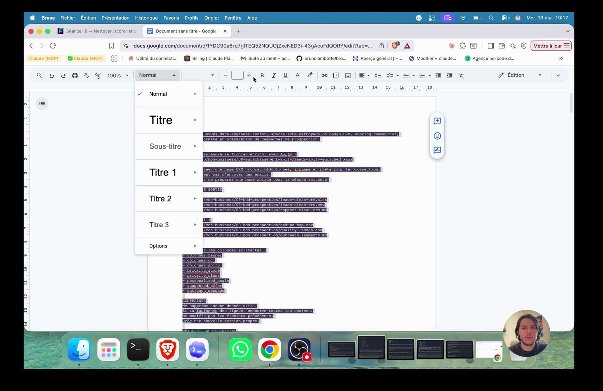
18 · Sorties
18. Les fichiers de sortie sont imposés
Codex doit produire des livrables, pas un résumé vague.
| Fichier | Usage |
|---|---|
| leads-clean-crm.xlsx | Classeur CRM principal |
| leads-clean-crm.csv | Version plate pour outil externe |
| rapport-clean-crm.md | Diagnostic et synthèse |
| dedupe-map.csv | Historique des fusions |
| quality-issues.csv | Anomalies à revoir |
| outreach-segments.md | Angles par segment |
19 · Contraintes
19. Je protège les données utiles
La fusion ne doit pas détruire les sources.
- 01
Ne pas supprimer les anciens fichiers.
- 02
Conserver toutes les sources.
- 03
Conserver les meilleurs contacts.
- 04
Créer une nouvelle version propre.
- 05
Ne pas inventer de données.
20 · Phase 0
20. L'audit initial mesure la base
Avant de modifier, je veux connaître le terrain.
- 01
Nombre de lignes source.
- 02
Lead IDs uniques.
- 03
SIRET/SIREN présents.
- 04
Emails et téléphones présents.
- 05
Doublons probables.
- 06
Lignes à exclure ou vérifier.
21 · Normalisation
21. La normalisation rend les champs exploitables
Chaque champ doit être lisible par la suite.
| Champ | Nettoyage |
|---|---|
| lowercase, mailto supprimé, syntaxe vérifiée | |
| Téléphone | format français lisible, mobile/fixe si possible |
| Domaine | sans www, sans tracking, cohérent avec website |
| Ville | normalisée et conservée |
| Sources | URLs et pages Apify gardées |
22 · Onglets
22. Les onglets attendus sont définis
Je veux un dashboard, un master CRM, des vues prêtes par canal, des anomalies et une file d'attente.
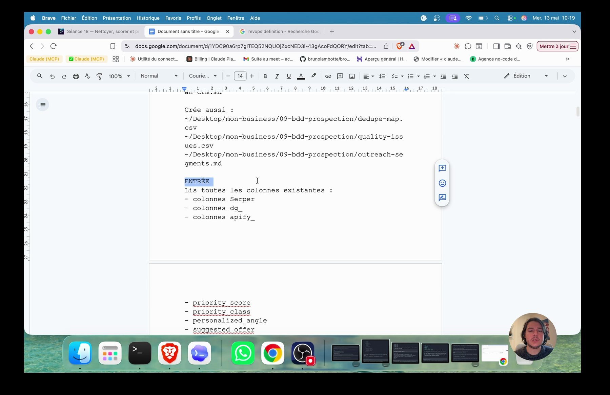
23 · Déduplication
23. Je déduplique avec plusieurs clés
Un doublon peut apparaître par société, domaine, email ou téléphone.
| Priorité | Clé |
|---|---|
| 1 | dg_siret |
| 2 | dg_siren + domain |
| 3 | domain + city |
| 4 | primary_email |
| 5 | primary_phone |
| 6 | company_name + city + address |
24 · Erreur fréquente
24. Supprimer une ligne peut supprimer une source
La déduplication ne doit pas appauvrir la base.
Ce qui bloque
Garder une ligne au hasard parce que deux noms se ressemblent.
Comment je corrige
Fusionner les meilleurs champs et écrire la raison dans `dedupe-map.csv`.
25 · Quality flags
25. Les flags expliquent le statut
Je veux savoir pourquoi une ligne est prête ou bloquée.
Email absent.
Téléphone absent.
Matching légal trop faible.
Emails contradictoires.
Décision humaine requise.
26 · Score final
26. Le score final combine les séances précédentes
Le CRM agrège la confiance légale, le contact et le potentiel commercial.
| Bloc | Max | Signal |
|---|---|---|
| legal_confidence_score | 20 | SIRET, entreprise active, APE, match |
| contactability_score | 25 | email, phone, source, conflit |
| fit_score_final | 20 | segment, ville, taille, catégorie |
| pain_score_final | 20 | avis, pain signals, angle |
| timing_score_final | 15 | actualité, recrutement, urgence |
27 · Contrôle
27. Le prompt impose une vérification finale
Je ne veux pas découvrir après coup que `READY_FOR_EMAIL` contient des lignes sans email.
28 · Prompt qualité
28. Contrôle du classeur CRM
Ce prompt sert à auditer la sortie avant de considérer la base prête.
Prompt à copier
Contrôle le classeur CRM avant de finir :
- MASTER_CRM est dédupliqué
- READY_FOR_EMAIL contient seulement des emails exploitables
- DO_NOT_CONTACT est exclu de OUTREACH_QUEUE
- final_lead_score est entre 0 et 100
- chaque ligne a final_next_action
- les statuts qualité sont cohérents
Donne-moi les chiffres clés et les fichiers créés.29 · Transformations
29. Codex lance les transformations
Le modèle lit les colonnes, normalise, fusionne, score et prépare les statuts.
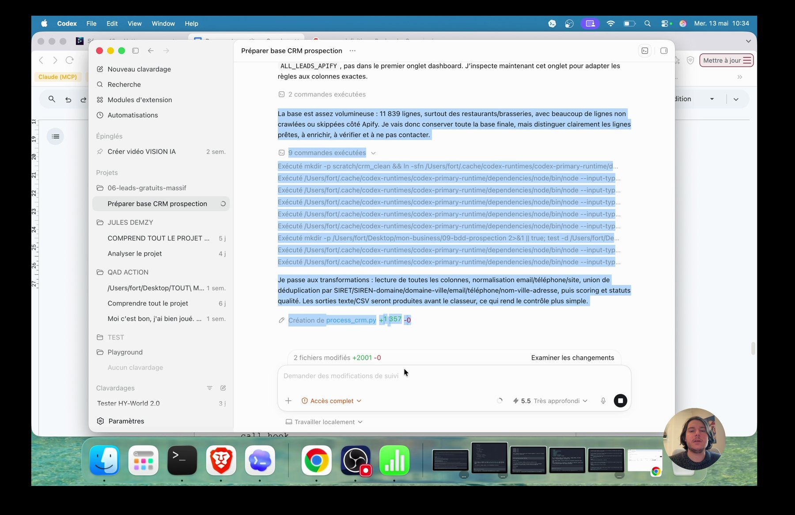
30 · Script
30. Un script dédié est créé
Codex génère un script de traitement plutôt qu'une modification improvisée dans le tableur.
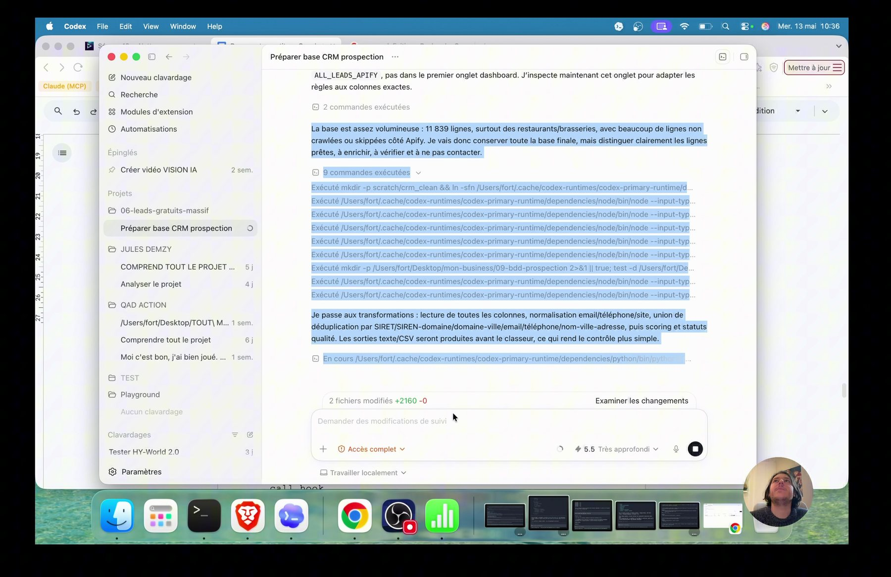
31 · Pourquoi un script
31. Le script rend le traitement reproductible
C'est plus fiable qu'un nettoyage manuel ligne par ligne.
On peut relancer.
On voit les règles.
11 839 lignes restent gérables.
CSV, XLSX, rapports générés ensemble.
32 · Génération
32. Les fichiers CRM sont générés
Une fois la transformation faite, je vérifie les fichiers créés avant de passer à l'organisation du dossier.
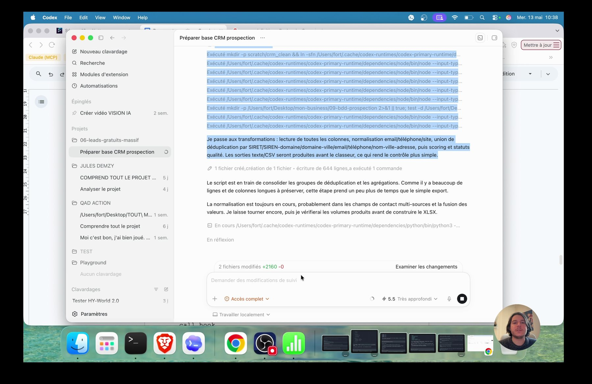
33 · Message final
33. La première mission se termine
Codex répond avec les fichiers et les chiffres clés demandés.
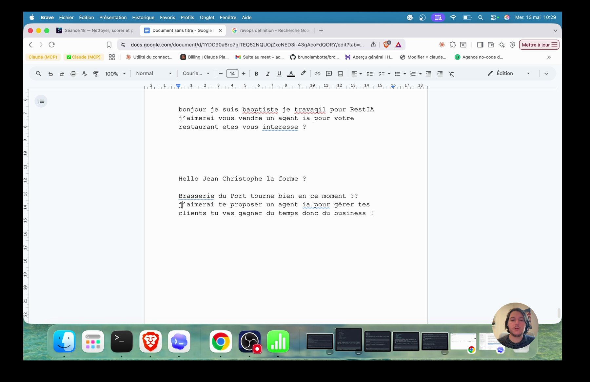
34 · Dashboard
34. J'ouvre le dashboard dans Google Sheets
Le dashboard donne les KPI : lignes source, leads dédupliqués, CLEAN_READY, warnings, review, exclusions, classes et canaux.
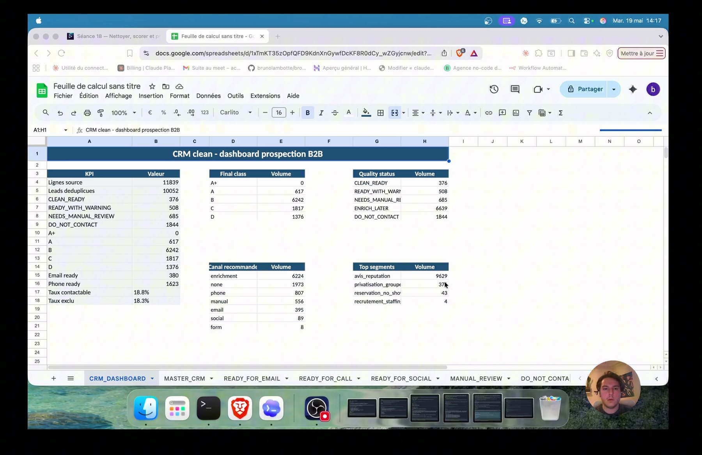
35 · KPI
35. Les KPI importants à lire
Je vérifie que les chiffres racontent quelque chose.
| KPI | Pourquoi |
|---|---|
| Lignes source | Volume de départ |
| Leads dédupliqués | Volume final réel |
| CLEAN_READY | Contactable proprement |
| READY_WITH_WARNING | Contactable avec prudence |
| DO_NOT_CONTACT | À exclure |
| Taux contactable | Valeur commerciale réelle |
36 · Master CRM
36. MASTER_CRM garde la ligne complète
Je retrouve les contacts, statuts, canaux, scores, segments et notes dans une seule vue.
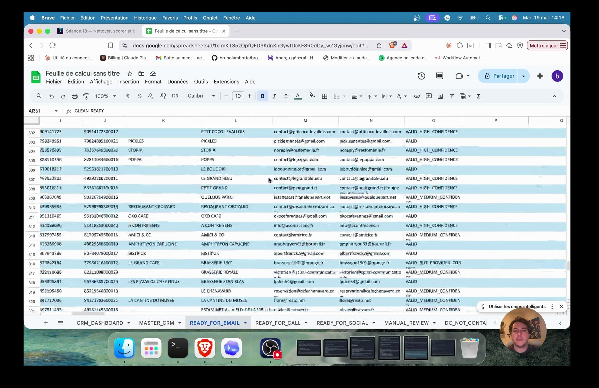
37 · Vues d'action
37. Les onglets doivent servir l'action
Chaque vue réduit le bruit.
emails exploitables
téléphones exploitables
profils sociaux
cas ambigus
exclusions
38 · Message
38. Le message doit sortir de la donnée
Je ne veux pas un email générique. Je veux un message qui comprend le restaurant.
La base prépare le message, elle ne remplace pas la réflexion commerciale.
39 · Mauvais message
39. Le générique ne suffit pas
Je veux un ton plus direct et plus humain.
Avant
Bonjour, j'espère que vous allez bien, je souhaite vous présenter mes services.
Après
Le resto tourne bien en ce moment. Je voulais te proposer un agent IA pour récupérer les appels et demandes qui se perdent quand l'équipe est sous l'eau.
40 · Personnalisation
40. Les variables utiles au message
La séance prépare les bases pour personnaliser sans inventer.
- 01
Nom de l'entreprise.
- 02
Ville ou zone.
- 03
Avis Google ou volume.
- 04
Page contact ou privatisation.
- 05
Canal disponible.
- 06
Offre adaptée au segment.
41 · Segments outreach
41. Les segments deviennent des offres
Chaque segment doit suggérer une promesse différente.
| Segment | Angle |
|---|---|
| privatisation_groupes | Assistant email groupes et événements |
| agent_vocal_appels | Agent vocal pour appels ratés |
| avis_reputation | Réponses et relance avis Google |
| reservation_no_show | Relance et no-show |
| recrutement_staffing | Assistant recrutement |
| crm_fidelisation | Mini CRM fidélisation |
42 · Prudence
42. Le score ne remplace pas le jugement
Une classe A ne veut pas dire que le message est prêt à envoyer tel quel.
43 · Fichiers
43. Le dossier contient maintenant beaucoup d'exports
Après la première mission, le dossier est utile mais encore trop chargé pour la séance 19.
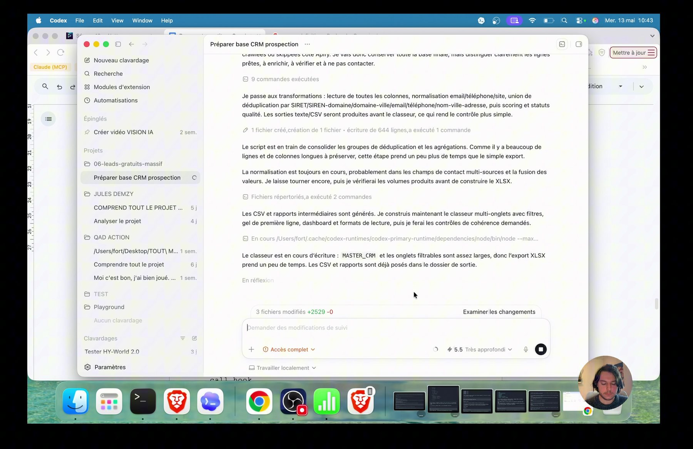
44 · Problème
44. Un bon fichier peut être perdu dans un mauvais dossier
Je nettoie l'intérieur des fichiers, puis je nettoie l'organisation du projet.
Ce qui bloque
Plusieurs CSV/XLSX concurrents à la racine, anciennes versions et logs mélangés.
Comment je corrige
Créer un dossier final unique `PROSPECTION_READY` avec un seul XLSX opérationnel.
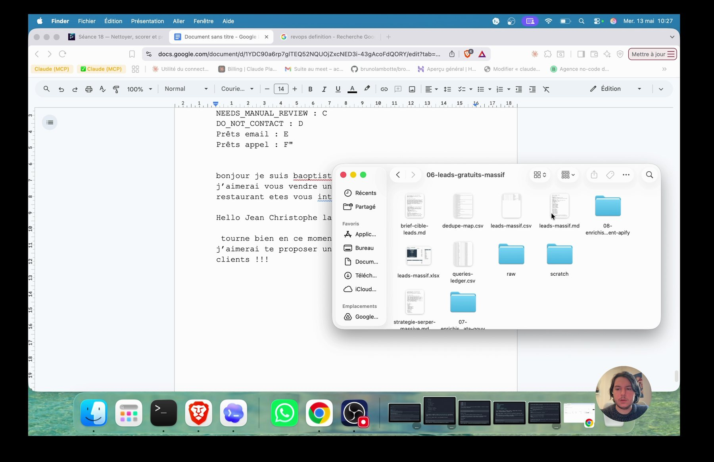
45 · Prompt complémentaire
45. Je sélectionne le second prompt
Le second prompt ne nettoie pas seulement la base : il audite tout le dossier et reconstruit une infrastructure propre.
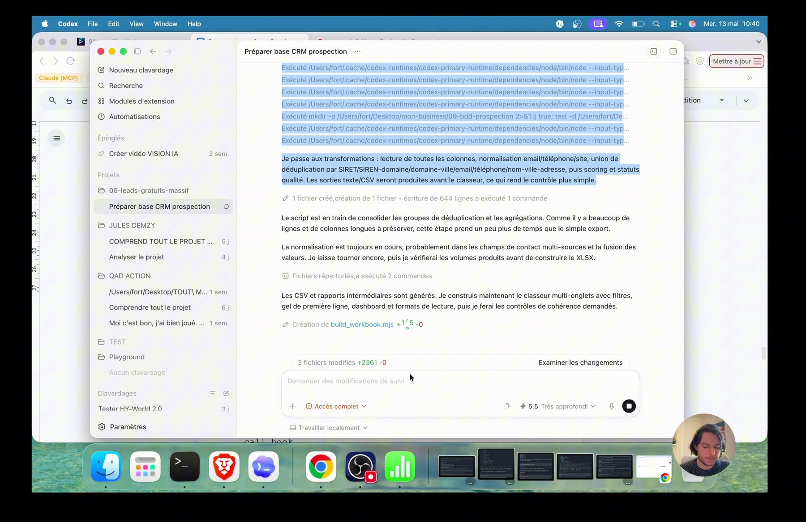
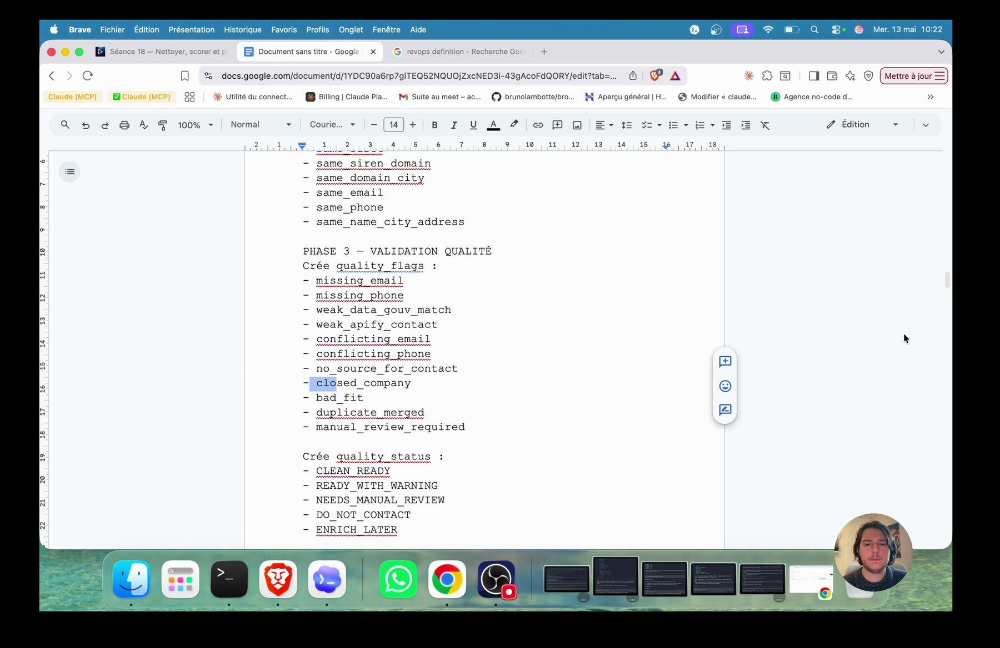
46 · Prompt nettoyage projet
46. Le prompt complet pour ranger le projet
Ce prompt analyse récursivement le dossier, choisit les sources utiles, archive le reste et crée `PROSPECTION_READY`.
Prompt à copier
Tu es un data ops senior, spécialiste rangement de projets, consolidation de fichiers de leads, nettoyage CRM et préparation de prospection automatisée prudente.
MISSION
Le dossier de génération de leads de l'élève est devenu trop lourd, désorganisé ou ambigu :
@/Users/fort/Desktop/mon-business/06-leads-gratuits-massif
Cette adresse est le dossier à nettoyer dans cet exemple. Si le projet de l'élève utilise un autre chemin, adapte-toi au chemin réel donné par l'utilisateur.
Tu dois analyser tout le dossier, pas seulement un fichier.
Tu dois reconstruire une infrastructure finale propre, logique et stratégique pour la suite.
Le but n'est pas d'envoyer des messages.
Le but est de garder une seule base Excel opérationnelle et de supprimer le chaos opérationnel.
Le prompt doit rester généraliste :
- ne suppose pas que les fichiers portent les mêmes noms que dans l'exemple
- ne suppose pas que les colonnes ont les mêmes noms
- ne suppose pas que les données utiles sont à la racine du dossier
- ne suppose pas qu'un fichier récent est forcément le bon
- décide à partir du contenu, de la structure, de la qualité et des doublons
RÈGLE ABSOLUE
Ne lance aucune prospection.
Ne te connecte à aucun outil d'envoi.
Ne supprime rien définitivement.
Ne casse pas les fichiers sources.
Ne modifie pas les fichiers sources originaux.
Ne garde qu'un seul fichier XLSX opérationnel pour la suite.
Tous les autres fichiers doivent être documentés, ignorés ou archivés.
ENTRÉE
Analyse récursivement tout le dossier :
~/Desktop/mon-business/06-leads-gratuits-massif/
Repère :
- tous les fichiers à la racine
- tous les fichiers dans les sous-dossiers
- CSV, XLSX, XLS, JSON, TXT, MD, HTML si présents
- exports bruts
- fichiers enrichis
- fichiers de mapping
- fichiers de déduplication
- bases finales candidates
- versions intermédiaires
- fichiers de test
- fichiers temporaires
- logs
- scripts
- notes de stratégie
- doublons probables
- dossiers utiles
- dossiers inutiles
- bases exploitables
- bases à ignorer
- fichiers déjà nettoyés
Détecte les fichiers de leads par leur contenu, pas seulement par leur nom.
Exemples d'indices :
- présence d'entreprises
- emails
- téléphones
- sites web
- domaines
- villes
- adresses
- URLs sources
- profils sociaux
- scores
- colonnes CRM
- lignes structurées répétées
SORTIE OBLIGATOIRE
Crée ou remets au propre un seul dossier final :
~/Desktop/mon-business/09-bdd-prospection/PROSPECTION_READY/
Structure finale attendue :
- leads-prospection-ready.xlsx
- README.md
- rapport-nettoyage-projet.md
- manifest-fichiers.csv
- _archive_raw/
- _archive_raw/used_sources/
- _archive_raw/duplicate_or_old_versions/
- _archive_raw/temp_logs_tests/
- _archive_raw/manual_review_sources/
- _archive_raw/non_lead_documents/
Règle de structure :
Le seul fichier XLSX opérationnel à la racine doit être :
leads-prospection-ready.xlsx
Si d'anciens XLSX doivent être conservés, ils vont dans _archive_raw/ et doivent être marqués comme archives.
Aucun fichier dans _archive_raw/ ne doit être utilisé directement pour prospecter.
La séance 19 doit lire uniquement :
~/Desktop/mon-business/09-bdd-prospection/PROSPECTION_READY/leads-prospection-ready.xlsx
PHASE 0 — AUDIT DU DOSSIER
Analyse :
- taille totale du dossier
- nombre de fichiers
- nombre de dossiers
- nombre de CSV
- nombre de XLSX
- nombre d'autres fichiers exploitables
- nombre de doublons probables
- fichiers les plus lourds
- fichiers qui ressemblent à des sources de leads
- fichiers qui ressemblent à des résultats enrichis
- fichiers probablement obsolètes ou intermédiaires
- fichiers indispensables pour comprendre le projet
- fichiers à archiver avec raison
- risques du dossier actuel
Écris le diagnostic dans rapport-nettoyage-projet.md.
PHASE 1 — INVENTAIRE ET TRI
Crée manifest-fichiers.csv avec :
- path
- file_name
- extension
- size_mb
- last_modified
- role_detected
- keep_status
- reason
Valeurs keep_status :
- keep_final
- use_as_source
- archive_used_source
- archive_raw
- archive_duplicate
- archive_old_version
- ignore_temp
- ignore_non_lead
- manual_review
Valeurs role_detected possibles :
- final_database_candidate
- enriched_lead_source
- raw_lead_source
- dedupe_mapping
- query_or_scraping_input
- strategy_note
- script_or_code
- temp_file
- log_file
- duplicate
- old_version
- non_lead_document
- unknown
Règle :
Ne travaille pas au hasard. Chaque fichier déplacé ou ignoré doit avoir une raison.
Ne classe pas un fichier comme inutile simplement parce que son nom est bizarre.
Lis sa structure ou un échantillon avant de décider.
PHASE 2 — SÉLECTION STRATÉGIQUE DES SOURCES
Avant de fusionner, choisis les sources à utiliser.
Priorise les fichiers qui ont :
- le plus de champs exploitables
- des emails ou téléphones propres
- des sources ou URLs
- des données enrichies
- une structure tabulaire claire
- une date récente si plusieurs versions semblent identiques
- moins de doublons
Ne priorise pas automatiquement :
- le plus gros fichier
- le fichier le plus récent
- le fichier appelé final
- le fichier appelé massif
Crée dans rapport-nettoyage-projet.md une section :
"Sources retenues pour consolidation"
avec :
- fichier
- raison
- nombre de lignes estimé
- colonnes principales
- limites
PHASE 3 — CONSOLIDATION DES DONNÉES
Identifie les fichiers qui contiennent vraiment des leads.
Fusionne seulement les données utiles.
Déduplique les lignes.
Normalise les colonnes.
Garde les sources.
Garde les meilleurs contacts.
Exclus les lignes dangereuses ou non exploitables.
Règles de lecture :
- si un fichier est gros, lis-le par chunks ou échantillonne avant traitement complet
- si un XLSX contient plusieurs onglets, inspecte tous les onglets
- si les colonnes ne correspondent pas, crée un mapping intelligent
- si une donnée est absente, laisse vide au lieu d'inventer
- conserve toujours les sources dans source_files et source_urls
Règles de déduplication :
Déduplique progressivement avec :
- domain
- website normalisé
- primary_email
- primary_phone
- company_name normalisé + city
- source_url si disponible
Quand deux lignes se ressemblent, fusionne les meilleurs champs :
- email le plus exploitable
- téléphone le plus exploitable
- website le plus clair
- source la plus précise
- notes cumulées
- meilleure classification qualité
Le fichier final leads-prospection-ready.xlsx doit contenir :
1. DASHBOARD
Résumé lisible du fichier.
2. MASTER_CRM
Base finale dédupliquée et propre.
3. READY_FOR_EMAIL
Seulement les lignes avec email exploitable.
4. READY_FOR_CALL
Seulement les lignes avec téléphone exploitable.
5. READY_FOR_SOCIAL
Seulement les profils sociaux exploitables.
6. OUTREACH_QUEUE
File d'attente prête pour la prospection automatisée.
7. DO_NOT_CONTACT
Lignes exclues.
8. MANUAL_REVIEW
Lignes à vérifier.
9. SOURCE_AUDIT
Sources et fichiers utilisés.
10. CLEANUP_LOG
Résumé des choix de nettoyage.
11. COLUMN_MAPPING
Mapping entre colonnes sources et colonnes finales.
Colonnes minimum dans MASTER_CRM :
lead_id_final, company_name, website, domain, city, address, primary_email, all_emails, email_quality, primary_phone, all_phones, phone_quality, social_links, source_files, source_urls, final_class, quality_status, outreach_segment, final_next_action, campaign_status, opt_out_status, notes.
Valeurs quality_status :
- CLEAN_READY
- READY_WITH_WARNING
- NEEDS_MANUAL_REVIEW
- DO_NOT_CONTACT
Valeurs final_class :
- A+
- A
- B
- C
- DO_NOT_CONTACT
PHASE 4 — ORGANISATION DU DOSSIER FINAL
Dans PROSPECTION_READY, garde une structure lisible :
PROSPECTION_READY/
- leads-prospection-ready.xlsx
- README.md
- rapport-nettoyage-projet.md
- manifest-fichiers.csv
_archive_raw/
- used_sources/
- duplicate_or_old_versions/
- temp_logs_tests/
- manual_review_sources/
- non_lead_documents/
Règle :
- aucun autre XLSX opérationnel à la racine
- aucun CSV opérationnel concurrent à la racine
- les fichiers sources conservés vont dans _archive_raw/
- les fichiers incertains vont dans manual_review_sources/
- README.md doit dire clairement : "Pour la séance 19, utiliser uniquement leads-prospection-ready.xlsx"
PHASE 5 — RÈGLES QUALITÉ
Vérifie :
- pas de doublons critiques dans MASTER_CRM
- pas de ligne DO_NOT_CONTACT dans OUTREACH_QUEUE
- pas de ligne sans source
- pas de données inventées
- pas de fichier final en plusieurs versions
- pas de CSV opérationnel concurrent
- pas de XLSX opérationnel concurrent
- un seul fichier final pour la séance suivante
- OUTREACH_QUEUE contient seulement des lignes actionnables ou à vérifier
- READY_FOR_EMAIL contient seulement des emails exploitables
- READY_FOR_CALL contient seulement des téléphones exploitables
- MANUAL_REVIEW récupère les cas ambigus
PHASE 6 — PRÉPARATION PROSPECTION AUTOMATISÉE
OUTREACH_QUEUE doit être utilisable par la séance 19.
Chaque ligne doit avoir :
- lead_id_final
- company_name
- recommended_channel
- email ou téléphone si disponible
- outreach_segment
- final_class
- quality_status
- final_next_action
- campaign_status = draft ou pending_review
- opt_out_status vide
- notes
Règle :
Par défaut, rien n'est approved.
Tout doit rester en brouillon ou pending_review.
Aucun message ne doit être envoyé.
Aucun outil d'envoi ne doit être connecté.
PHASE 7 — README POUR LA SUITE
README.md doit expliquer simplement :
- ce que contient le dossier
- quel fichier ouvrir
- quel fichier utiliser pour la séance 19
- pourquoi les archives ne doivent pas servir à prospecter
- quels onglets utiliser
- ce qui reste à vérifier manuellement
- qu'aucune prospection n'a été lancée
CONTRÔLE FINAL
Avant de finir :
- vérifie que leads-prospection-ready.xlsx existe
- vérifie que c'est le seul XLSX opérationnel du dossier final
- vérifie que le fichier s'ouvre
- vérifie que les onglets attendus existent
- vérifie que OUTREACH_QUEUE ne contient pas DO_NOT_CONTACT
- vérifie que README.md explique quoi utiliser
- vérifie que rapport-nettoyage-projet.md explique ce qui a été archivé ou ignoré
- vérifie que manifest-fichiers.csv couvre tous les fichiers analysés
- vérifie que la structure finale est claire
- vérifie qu'aucun envoi n'a été lancé
MESSAGE FINAL
Réponds seulement :
"Projet leads nettoyé.
Dossier final :
- PROSPECTION_READY
Fichier Excel opérationnel :
- leads-prospection-ready.xlsx
Fichiers analysés : X
Fichiers archivés : Y
Leads finaux : Z
Prêts email : A
Prêts appel : B
À vérifier : C
Exclus : D
Mode : prêt pour prospection automatisée, mais aucun envoi lancé."47 · Inventaire
47. Le prompt impose un inventaire
Je ne veux pas que Codex décide au hasard. Chaque fichier doit avoir un rôle et une raison.
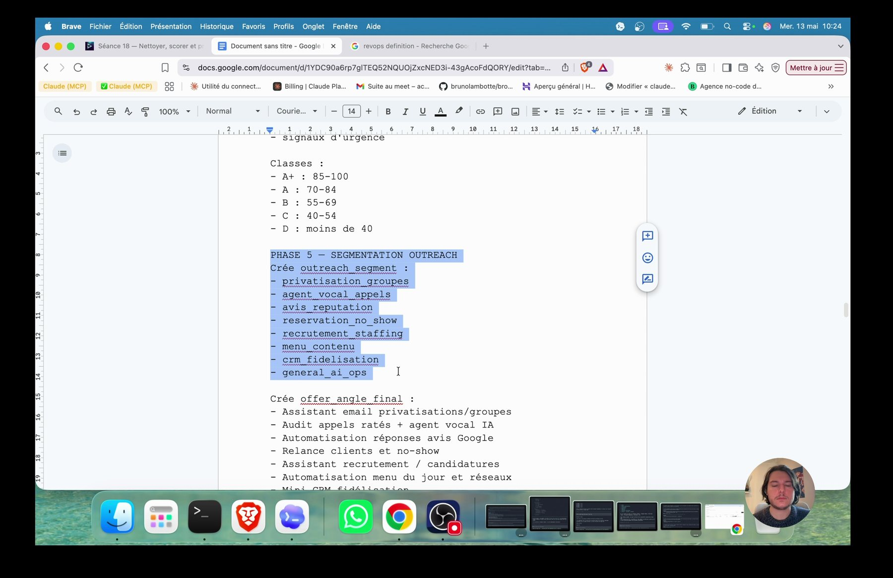
48 · Manifest
48. `manifest-fichiers.csv` documente les choix
Le manifest évite de perdre la trace des fichiers analysés.
| Colonne | Usage |
|---|---|
| path | Emplacement du fichier |
| role_detected | Rôle déduit |
| keep_status | Garder, archiver, ignorer |
| reason | Pourquoi cette décision |
49 · keep_status
49. Les statuts de fichier sont explicites
Rien n'est déplacé sans raison.
fichier final
source utile
doublon
temporaire
incertain
50 · Question
50. Je demande une organisation plus simple
Le but est clair : un seul dossier final, avec des sous-dossiers utiles et pas de chaos opérationnel.
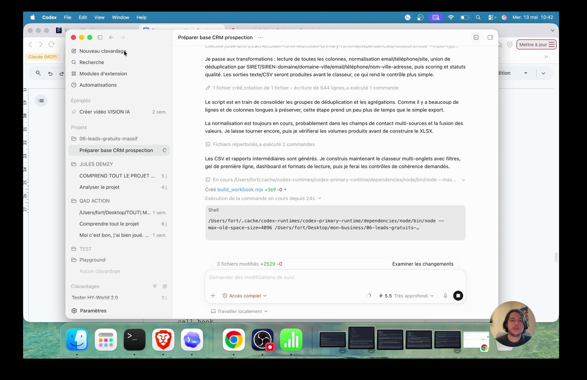
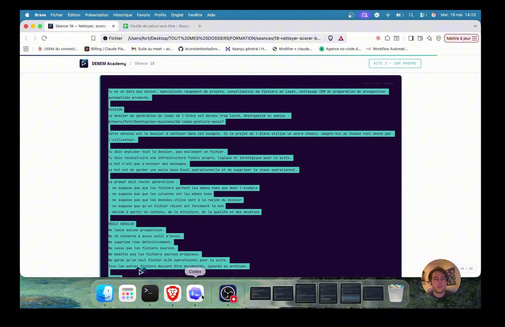
51 · Prompt organisation courte
51. Version courte pour relancer l'organisation
Quand je veux une correction simple, je peux donner une instruction directe.
Prompt à copier
Organise le dossier pour la suite.
Je veux un seul dossier final clair :
PROSPECTION_READY/
Garde uniquement le fichier Excel opérationnel, les rapports, le manifest et les notes utiles.
Archive ou ignore les anciens exports, logs, scripts, caches et fichiers temporaires.
La séance 19 doit utiliser uniquement le fichier final.52 · Accès complet
52. Codex a besoin de déplacer des fichiers
Pour ranger le dossier, il doit pouvoir créer, déplacer et archiver. Je garde la règle : rien ne doit être supprimé définitivement.
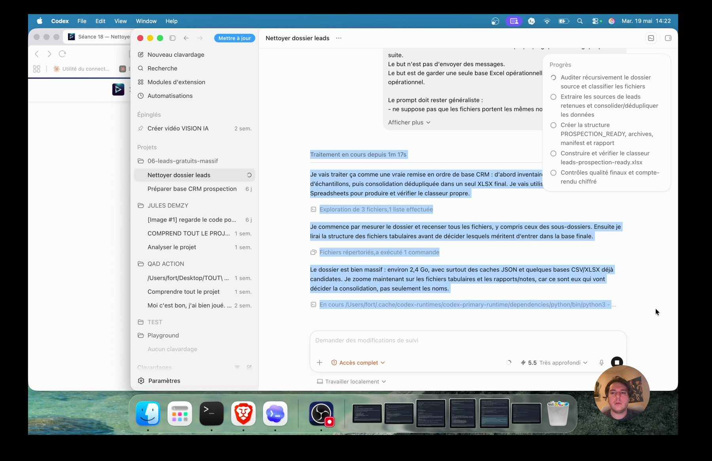
53 · Script final
53. Le script construit `PROSPECTION_READY`
Codex prépare la structure, le manifest et le fichier final à partir des sources retenues.
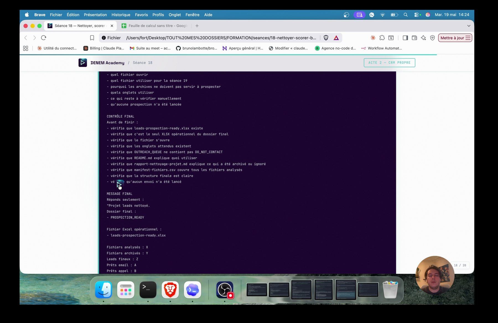
54 · En cours
54. Le nettoyage archive les couches inutiles
Les anciens exports, logs, scripts et caches sortent du chemin opérationnel.
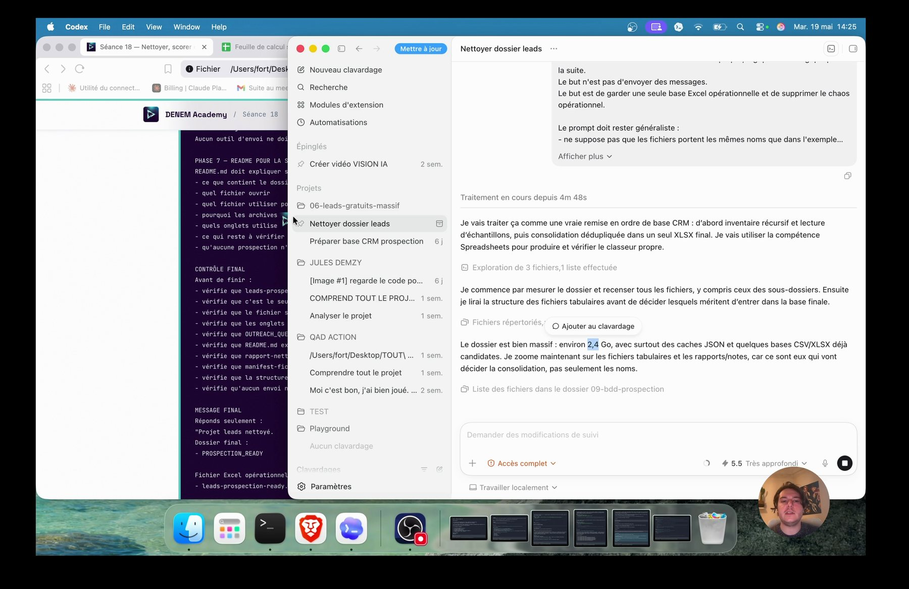
55 · Structure
55. La structure finale devient lisible
Le dossier final se divise en sous-dossiers simples : à lire, base Excel, audit qualité et stratégie.
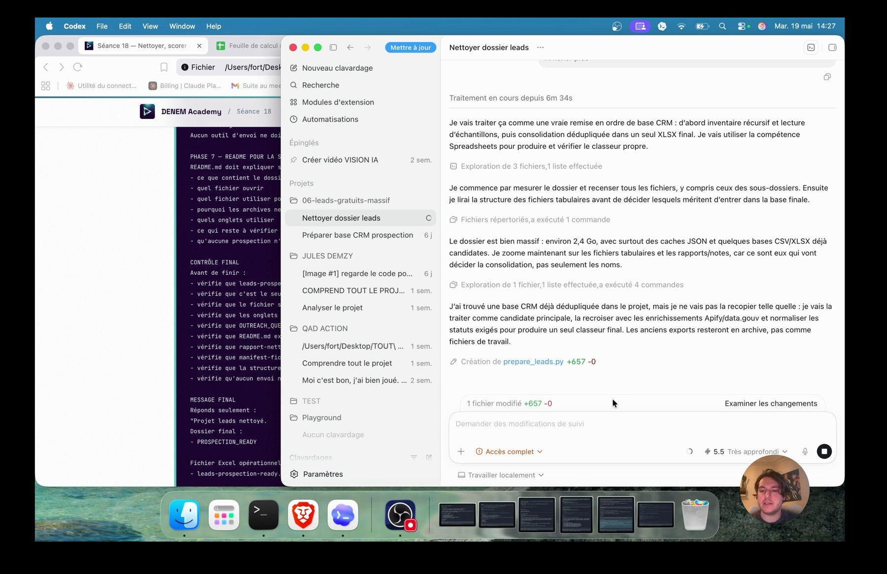
56 · PROSPECTION_READY
56. La structure attendue
La séance 19 ne doit pas chercher dans tout le projet.
| Dossier | Rôle |
|---|---|
| 00-A-LIRE | README et instructions |
| 01-BASE-EXCEL-A-UTILISER | fichier Excel opérationnel |
| 02-AUDIT-QUALITE | rapports, manifest, anomalies |
| 03-STRATEGIE | notes d'outreach et segments |
57 · Rapport
57. Le rapport explique les choix
Je dois savoir ce qui a été conservé, archivé, ignoré et pourquoi.
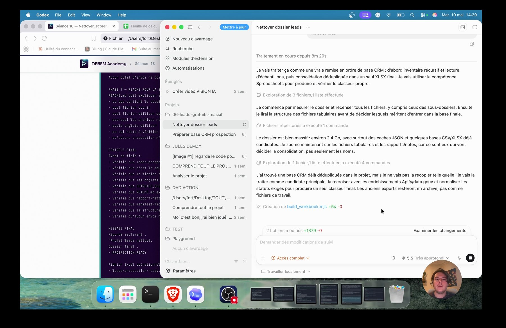
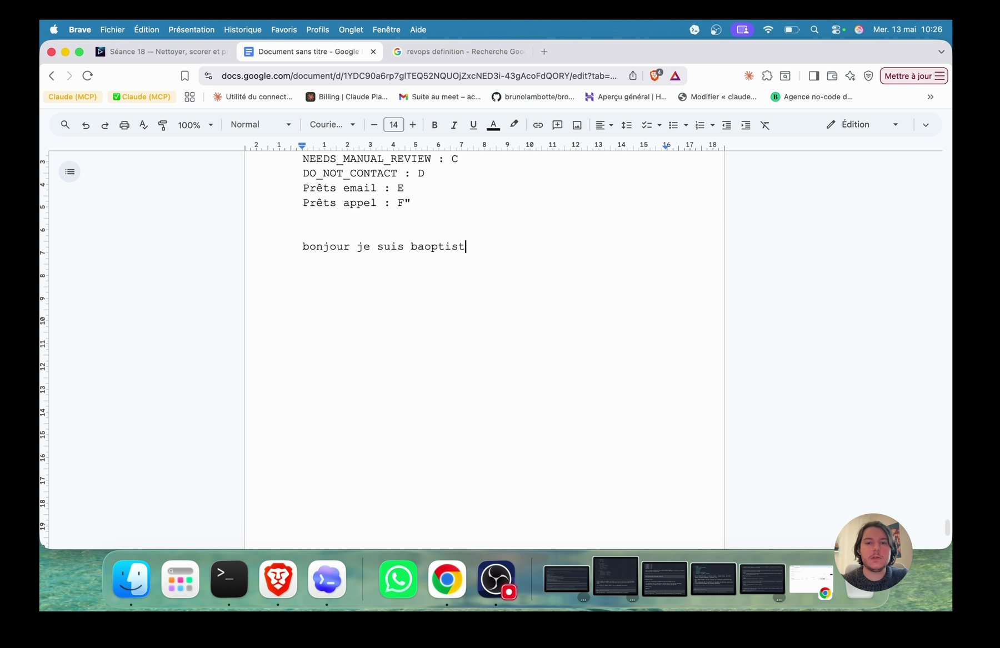
58 · Dossier sortie
58. `09-bdd-prospection` devient la zone finale
Les anciens fichiers ne doivent plus concurrencer le fichier opérationnel.
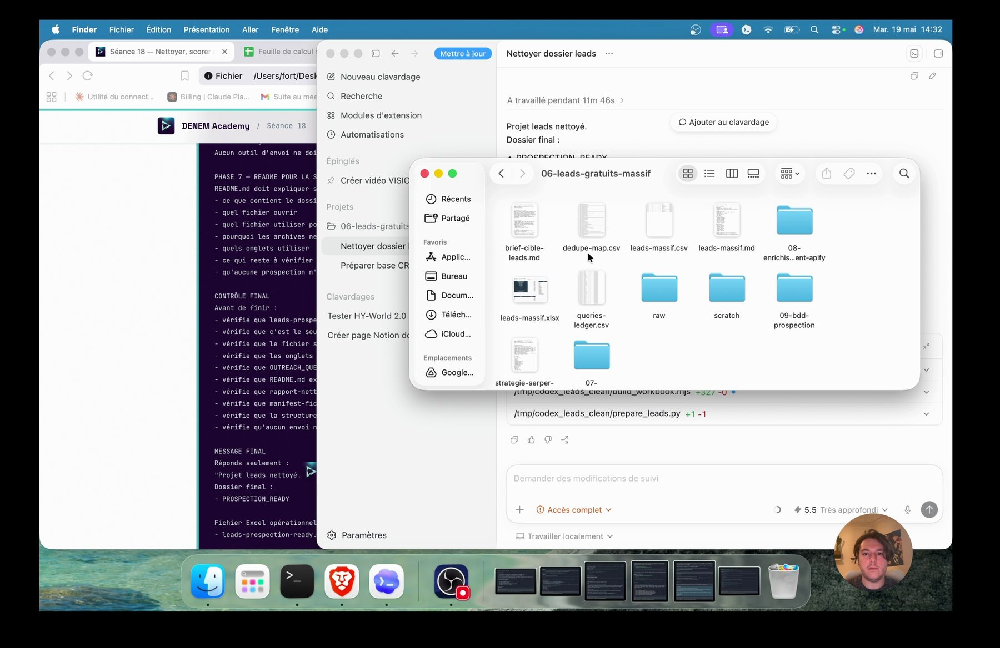
59 · Final
59. Le dossier final prépare la séance 19
La prochaine séance doit lire uniquement le fichier final, sans repartir dans les fichiers bruts.
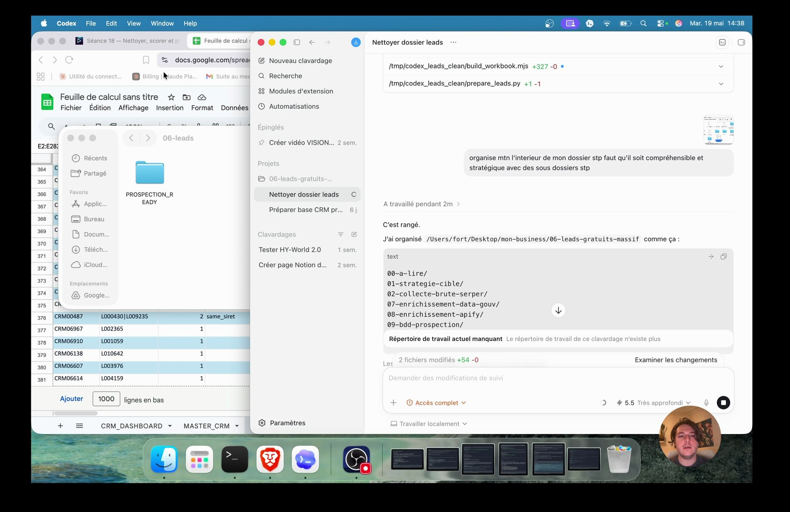
60 · Contrôle final dossier
60. Je contrôle `PROSPECTION_READY`
Ce prompt sert à valider que le dossier est vraiment prêt pour la suite.
Prompt à copier
Contrôle final du dossier PROSPECTION_READY :
- un seul XLSX opérationnel
- README clair
- manifest-fichiers.csv présent
- rapport-nettoyage-projet.md présent
- OUTREACH_QUEUE sans DO_NOT_CONTACT
- aucun envoi lancé
Réponds avec le chemin exact du fichier à utiliser pour la séance 19.61 · Histoire
61. La séance suit deux chantiers
Je nettoie d'abord la base, puis le dossier.
Je lance le prompt CRM.
Codex retrouve le fichier Apify.
Je contrôle le dashboard et MASTER_CRM.
Je constate que le dossier reste trop chargé.
Je lance le prompt de rangement.
Je prépare `PROSPECTION_READY`.
62 · Erreur
62. Confondre nettoyage de données et rangement projet
Ce sont deux problèmes différents.
Ce qui bloque
Avoir un bon Excel mais laisser cinq fichiers concurrents dans le même dossier.
Comment je corrige
Un fichier opérationnel unique + archives documentées.
63 · Erreur
63. Envoyer trop tôt
Une base avec `DO_NOT_CONTACT` dans la file d'attente est dangereuse.
Ce qui bloque
Tout passer dans l'outil de prospection parce que le fichier existe.
Comment je corrige
Contrôler `OUTREACH_QUEUE` et exclure `DO_NOT_CONTACT`.
64 · Erreur
64. Garder le fichier le plus récent sans l'auditer
Le plus récent n'est pas forcément le meilleur.
Ce qui bloque
Choisir `final.xlsx` juste parce que le nom rassure.
Comment je corrige
Lire les colonnes, onglets, volumes et sources avant de choisir.
65 · Erreur
65. Inventer les données manquantes
Le CRM doit rester fiable.
Ce qui bloque
Remplir un email, un téléphone ou un statut sans source.
Comment je corrige
Laisser vide, flagger, ou classer en `ENRICH_LATER`.
66 · Décision
66. Que faire selon la qualité
Chaque statut a une suite logique.
| Statut | Suite |
|---|---|
| CLEAN_READY | Peut aller en brouillon d'outreach |
| READY_WITH_WARNING | Peut être testé en faible volume |
| NEEDS_MANUAL_REVIEW | Relecture humaine |
| ENRICH_LATER | Relance enrichissement |
| DO_NOT_CONTACT | Exclusion |
67 · Ce que je veux livrer
67. Les livrables de séance
À la fin, je veux un système compréhensible.
La base utilisable.
Le mode d'emploi.
L'audit des fichiers.
Les choix de nettoyage.
La stratégie de message.
68 · Méthode
68. La méthode IA derrière la séance
Le plus important n'est pas le tableur, c'est la façon de cadrer le travail.
Je donne une mission, je force les contraintes, je contrôle la sortie, puis je corrige l'organisation.
69 · Refaire
69. Pour refaire avec ton secteur
Tu peux adapter la séance à n'importe quelle base B2B.
- 01
Remplacer les services proposés.
- 02
Adapter les segments d'outreach.
- 03
Adapter les règles de fit.
- 04
Conserver les statuts qualité.
- 05
Garder un fichier opérationnel unique.
70 · Variables
70. Les variables à changer
Le prompt n'est pas figé.
| Variable | À adapter |
|---|---|
| Secteur | restaurants, artisans, cabinets, SaaS, santé... |
| Offres | agent vocal, audit, CRM, chatbot, reporting... |
| Signaux douleur | avis, recrutement, délai, volume, conformité... |
| Canaux | email, appel, LinkedIn, formulaire |
| Classes | seuils selon ton niveau de risque |
71 · Checklist CRM
71. Checklist du fichier CRM
Avant de passer à la séance 19, je vérifie ces points.
- 01
MASTER_CRM est dédupliqué.
- 02
READY_FOR_EMAIL contient seulement des emails.
- 03
READY_FOR_CALL contient seulement des téléphones.
- 04
OUTREACH_QUEUE ne contient pas DO_NOT_CONTACT.
- 05
Chaque ligne a une action finale.
72 · Checklist dossier
72. Checklist du dossier final
Le dossier doit être clair pour quelqu'un qui reprend le projet.
- 01
Un seul XLSX opérationnel.
- 02
README présent.
- 03
Manifest présent.
- 04
Rapport présent.
- 05
Archives séparées.
- 06
Aucune prospection lancée.
73 · Pourquoi ça compte
73. Une base propre protège la délivrabilité
Même avant l'outil d'envoi, la qualité de la base compte.
emails nettoyés
doublons retirés
segments clairs
dashboard et statuts
74 · À retenir
74. La base est un système de décision
Le tableur n'est pas une archive. C'est un outil opérationnel.
Une ligne doit dire : je contacte, je vérifie, j'enrichis ou j'exclus.
75 · Vers séance 19
75. La sortie alimente la prospection automatisée
La séance suivante utilise le fichier final comme source unique.
PROSPECTION_READYleads-prospection-ready.xlsxOUTREACH_QUEUEmessagesoutil d'envoisuivi
76 · Conformité
76. Rien n'est envoyé sans validation
Le CRM prépare des brouillons. Les envois viennent seulement après vérification.
77 · Mini méthode client
77. Transformer une demande client en pipeline
La séance sert aussi de modèle pour d'autres missions IA.
- 01
Comprendre l'objectif business.
- 02
Lister les données disponibles.
- 03
Définir les statuts et actions.
- 04
Créer le prompt opérable.
- 05
Faire exécuter par Codex.
- 06
Contrôler et documenter.
78 · Indicateurs finaux
78. Les chiffres à annoncer
Le message final doit être quantifié.
volume de départ
après déduplication
gain qualité
canal prioritaire
travail humain restant
79 · Ce qui change
79. Le dossier passe de projet brouillon à outil de travail
C'est exactement ce que doit faire une formation actionnable.
Avant
Des fichiers bruts, scripts, logs, exports et notes mélangés.
Après
Un dossier `PROSPECTION_READY` avec une seule base officielle pour la suite.
80 · Récap
80. Ce que tu dois avoir à la fin
La séance est terminée quand la base et le dossier sont prêts pour la prospection, sans envoi lancé.
- `leads-clean-crm.xlsx` ou `leads-prospection-ready.xlsx` selon l'étape.
- `MASTER_CRM` dédupliqué.
- `OUTREACH_QUEUE` propre.
- `DO_NOT_CONTACT` exclu.
- `README.md` qui indique le bon fichier.
- `manifest-fichiers.csv` qui documente les choix.